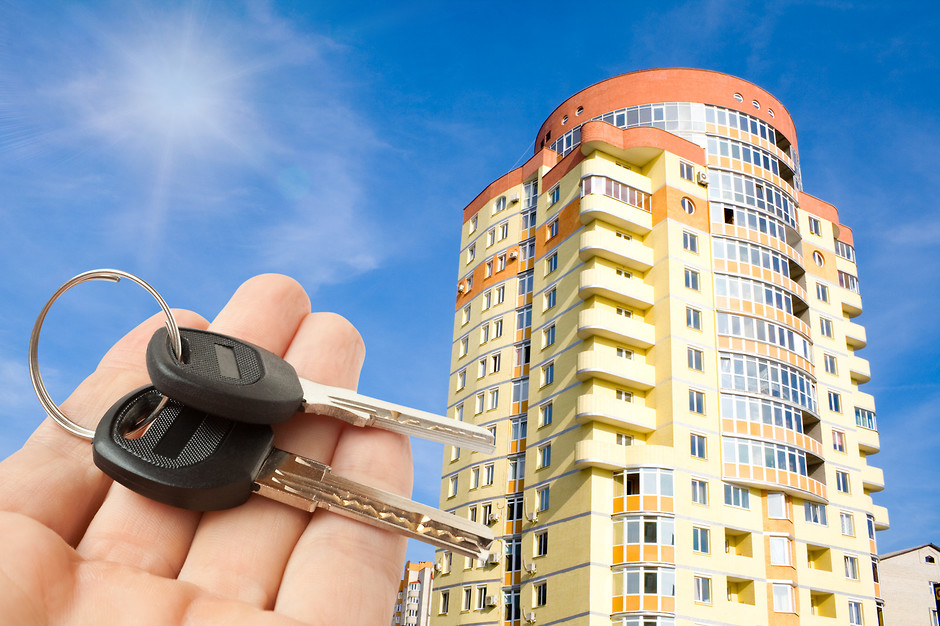

Сьогодні розглянемо:
- Чим відрізняється житло в новобудові від вторинного?
- Як вибрати забудовника
- Як вибрати квартиру в новобудові за ціною
- Як вибрати район майбутнього житла
- Як купити квартиру в новобудові за допомогою ріелтора
- Корисні поради
Чим відрізняється житло в новобудові від вторинного?
Перед тим, як купувати житло, варто розглянути переваги та недоліки кожного з цих варіантів.
Переваги вторинного житла
- Квартира вже існує, ви можете оглянути її перед купівлею, побачити на власні очі її планування, вид з вікон, стан під’їзду та двору, виявити усі можливі недоліки та оцінити, чи вона вам підходить.
- Ви можете в’їхати в квартиру одразу ж після купівлі або в крайньому випадку – після ремонту.
- Як правило, поблизу вторинного житла добре розвинена інфраструктура, є магазини, аптеки, дитячі заклади, майданчики для відпочинку, кафе, парки чи сквери.
Недоліки вторинного житла
- При купівлі такого житла необхідно перевірити, які люди тут жили раніше, чи немає заборгованості по комунальних послугах, які сусіди живуть поруч, тощо. Може виявитись, що квартира має свою неприємну «історію», або за неї є борги, чи сусіди, які були в поганих стосунках з попередніми власниками, почнуть дошкуляти і вам.
- Планування квартир в будинках радянського періоду часто є не дуже зручним, особливо в порівнянні з сучасними новобудовами, де все продумано в дрібницях. Ще в більшій мірі це стосується квартир у старих дорадянських будинках, тим більше що багато таких приміщень піддавалися неодноразовому переплануванню.
- Старі будинки, особливо в центральній частині міста, і так звані «хрущовки» часто потребують реставрації, а часом і капітального ремонту.
- Електропроводка, водопровідні та каналізаційні системи, опалювальні труби та інші комунікації в старих будинках можуть виявитись зношеними чи пошкодженими.
- Під’їзди та двори старих будинків досить часто перебувають не в кращому стані – можуть бути неохайними, занедбаними, розписаними різноманітними написами на стінах.
- Біля старих будинків зазвичай нема місць для стоянки автомобіля.
Переваги житла в новобудові
- Сучасні квартири характеризуються дуже зручним плануванням, яке враховує усі потреби прогресивної людини. Великі вікна з якісними склопакетами, просторі світлі кімнати, велика кухня, зручні лоджії, де можна влаштувати затишний куточок для відпочинку, обладнана усім необхідним простора ванна кімната – всі ці особливості роблять квартири в новобудовах надзвичайно привабливими.
- Продуманими та зручними є не лише самі квартири, але і територія довкола будинку. Зазвичай в сучасних будинках є власна стоянка для автомобілів, нові гарні дитячі майданчики, місця для посадки квітів та дерев. Територія часто буває огороджена, щоб сторонні люди не заходили в будинок і у двір. Завдяки цьому ви можете не переживати за безпеку ваших дітей, які бавляться на майданчику, чи автомобіля на стоянці.
- Квартири в новобудовах часто здаються з готовим ремонтом під так звану «фінішну обробку», яка дозволяє оформити квартиру у вибраному вами стилі, і в той же час позбавляє необхідності робити ремонт у найближчі роки.
- Системи опалення в нових будинках є індивідуальними, з можливістю регулювати температуру в приміщенні самостійно і економити кошти на опалення.
Недоліки житла в нових будинках
- Квартиру в запланованому будинку ви зможете побачити лише на плані або в 3D-моделі. Фактично, ви купуєте те, чого поки що не існує.
- Ви не зможете вселитися в квартиру одразу після укладання договору – доведеться чекати, коли будинок буде побудований. До того ж, забудовники можуть зривати строки і здавати будинки значно пізніше, ніж було заплановано.
- Нерідкі випадки недобросовісності забудовників, коли збудована квартира не відповідає запланованим параметрам.
- Навіть якщо ви купуєте квартиру у вже завершеному будинку, в ній ще доведеться робити ремонт, тому в’їхати одразу знову ж таки не вийде.
- Слід врахувати, що усі нові жильці будуть робити ремонти протягом певного часу. А отже, навіть коли ви в’їдете в квартиру, в перші місяці варто бути готовими до постійних ремонтних шумів.
- Буває, що комунікації підключають із запізненням, ліфти не працюють після вселення жильців, системи опалення чи водопостачання теж можуть працювати зі збоями, що вносить суттєвий дискомфорт при вселенні в нову квартиру.
Втім, більшість цих недоліків потребують лише вашого терпіння. А чудове зручне планування і врахування потреб сучасної людини варті того, щоб почекати.
Для того, щоб це очікування було спокійним, варто розібратися у всіх тонкощах і правильно оформити майнові права на квартиру. Ми рекомендуємо звернутись до спеціалістів, які подбають про юридичні нюанси оформлення права власності на квартиру в новобудові.
Як вибрати забудовника
В останні роки з’явилася велика кількість забудовників, які проектують та будують нові будинки. Зазвичай їх проекти виглядають надзвичайно гарно на картинках, але як же переконатися – чи після завершення будівництва ви отримаєте саме таку квартиру, яку очікували згідно планів?
Щоб визначитися, чи вибраний вами забудовник заслуговує на вашу довіру, вам слід поцікавитися його репутацією.
Більшість забудовників зараз мають власні сайти, на яких ви можете побачити вже збудовані ними будинки. Експерти радять не вкладатися у фінансування будинку, якщо він є у забудовника першим – адже в цьому випадку ви не зможете перевірити якість його робіт.
Якщо певний забудовник сподобався вам і ви хотіли би придбати в нього квартиру, незайвим буде подивитись на готові будинки. Під’їхати до такого будинку, оглянути його, навіть поговорити з жильцями – не займе багато часу, але допоможе зробити висновки щодо якості робіт.
Також ви можете пошукати відгуки від жильців на сайтах. На власному сайті компанії можуть бути присутні лише позитивні відгуки, тому краще знайти реальні думки людей на форумах, де обговорюється якість житла. Практично на будь-якому форумі міста можна знайти або започаткувати самому таку тему. Варто вияснити – чи вкладається забудовник в заявлені терміни, чи планування квартир відповідає обіцяному, чи задовольняє жильців якість житла, ремонту, комунікацій, території навколо будинку, тощо.
Експерти радять також поцікавитися, як даний забудовник поводився під час кризи 2008-2010 рр. Якщо будівництво тривало – значить, ця компанія вміє справлятися з труднощами і є надійною. Не варто довіряти забудовникам, які мають заморожені об’єкти чи недобудовані будинки.
Якщо будинок, в якому ви хочете купити квартиру, вже почали будувати, бажано навідатися на будівельний майданчик. Спостереження за ходом будівництва також дозволить зробити висновки про якість забудови.
Якщо зібрана вами інформація укріпила вашу довіру до забудовника, слід дізнатися – за які саме кошти зводиться новобудова. Якщо будівництво фінансується банком, доцільно взнати, наскільки цей банк надійний. Ви можете подивитися, на якому місці він знаходиться в рейтингу надійності – така інформація є загальнодоступною. Згідно статистичних даних експертів, близько 30% заморожених будівництв були зупинені саме через припинення фінансування банком.
Також варто дізнатися, чи у компанії наявні всі необхідні документи. Детальніше питання документації ми розглянемо далі в статті.
Як вибрати квартиру в новобудові за ціною
Ціни за квадратний метр в новобудовах суттєво відрізняються в залежності від забудовника, від типу будинку та квартири, розташування новобудови і району міста.
Розкид цін дуже великий – ви можете вибрати малогабаритну 1-2-х кімнатну квартиру або розкішні двоповерхові апартаменти. Сучасні компанії пропонують різні варіанти на різні гаманці.
У Львові в 2017 році ціни на житло коливаються від 8 500 грн за кв.м у приміських зонах до 35 500 грн і вище в елітних будинках.
За останні роки ціни на житло у Львові та області знизилися у зв’язку з виходом на ринок нових будівельних компаній і побудовою великої кількості нових будинків. Ще у 2010−2012 рр. у Львові будівництво в основному вели 5−6 великих компаній. Вони ж і контролювали ринок, чим створили штучний дефіцит житла.
Збільшення попиту на нерухомість у Львові в останні роки, яке пов’язано з переселенням до Львова колишніх мешканців Донбасу та інших східних регіонів, призвело до появи нових будівельних компаній.
В результаті, хоча в гривнях ціни на житло зросли, у доларовому еквіваленті вони знизилися. Сьогодні ціна в 400 USD за кв.м вважається цілком адекватною, в той час як ще у 2014 році вона становила щонайменше 1000 USD за кв.м.
Дізнатись про актуальні ціни на житло різного типу у Львові та інших регіонах України ви можете на різних ресурсах інтернету. Зокрема на таких сайтах, як Енциклопедія Новобудов (http://novobudovy.com), ЛУН (https://novostroyki.lun.ua), та на багатьох інших.
Як вибрати район майбутнього житла
Вибір району міста – не менш важлива справа, ніж вибір самої квартири. Адже саме в цьому районі вам доведеться жити, спілкуватися, відвідувати магазини і кафе. Тут будуть гуляти і, ймовірно – вчитись ваші діти. Можливо, ви будете щодня вигулювати тут вашого улюбленого пса або бігати ранковий крос. Тому доцільно якомога більше дізнатися про район, в якому ви плануєте жити.
Перш за все слід вияснити, який рівень злочинності зафіксований в даному районі. Про це можна дізнатися на міських сайтах, де висвітлюється динаміка правопорушень по місту. Ви можете також звернутись у районний відділ міліції і розпитати, чи район, в якому ви збираєтеся оселитись, є безпечним для вас і ваших дітей.
Також важливо взнати, як розвинена інфраструктура району, чи є поблизу новобудов супермаркети чи звичайні продуктові магазини, аптеки, кафе, розважальні заклади. Якщо у вас є діти або ви плануєте їх появу – дізнайтеся, чи є поруч з будинком дитячі садочки, школи, спортивні заклади. Якщо будинок не забезпечений власною стоянкою для автомобілів, поцікавтеся, чи є стоянки поруч.
Важливим також є загальний стан району – чи є тут парки або сквери, чи вони доглянуті, який стан вулиць тощо.
Як купити квартиру в новобудові за допомогою ріелтора

Якщо у вас немає часу на те, щоб шукати потрібний варіант квартири, або ви недостатньо добре розбираєтеся у нюансах вибору забудовника і квартири, ви можете звернутися до ріелтора (маклера).
Як правило, ріелтори добре розбираються у ринку нерухомості, вони завжди в курсі, які будинки зараз будуються, в яких вже збудованих можна купити квартиру. Агентства нерухомості мають великі бази даних, і тому можуть швидко підібрати вам той варіант, який вас влаштує по всіх параметрах.
Вартість послуг маклера зазвичай становить певний відсоток від угоди. Найчастіше в Україні це – 2-5% від вартості квартири, які сплачує покупець нерухомості.
В країнах Європи та США цей відсоток може бути вищим – 3-6% в залежності від того, елітне чи бюджетне житло є об’єктом угоди. За кордоном ріелторські компанії завжди підписують з клієнтом ексклюзивний договір на певний термін, що гарантує маклеру отримання комісійних.
Ріелторський бізнес в Україні в останні роки розвивається досить активно. Часто будівельні компанії заключають договори з агентствами нерухомості, які допомагають знайти покупців на житло. Тоді, в залежності від умов договору, забудовник теж платить ріелторам.
Корисні поради
При виборі забудовника поцікавтеся його репутацією, тим, які будинки він вже здав в експлуатацію, чи відповідають ці будинки і квартири в них тим, що були заплановані. Бажано знайти відгуки покупців, які придбали квартири в будинках цього забудовника. Доцільно перевірити, чи були заведені судові справи на цього забудовника.
Обов’язково переконайтеся у чинності документів, на підставі яких будується даний будинок. Попросіть забудовника показати повний пакет документів, і якщо він відмовиться – не варто мати з ним справи.